AI Model, Project Plan, and Review of Websites to be Scraped
During this week a base AI model was made that can evaluate whether houses have vegetation in front of the property or not.This model evaluates two inputs of image folders or labels using just under 400 images in each category. This binary model can be reused later on the AI housing project and expanded to accomplish more complex tasks.The images used were downloaded from a kaggle(website) data set which has approximately 20,000 images of houses. I estimate that 15-20% of the data set includes pictures of boats, maps, extremely expensive houses, and birds eye view images. To gather our images for the AI model we had to manually go through and sort which houses have vegetation in front of them and which do not excluding images of bad images listed above, confusing images, houses in deserts, houses with snow, and houses in forests due to all of these are different than what we will see in Midwestern houses. In total we had about 750 images about 350 for non vegetation and 400 vegetation.
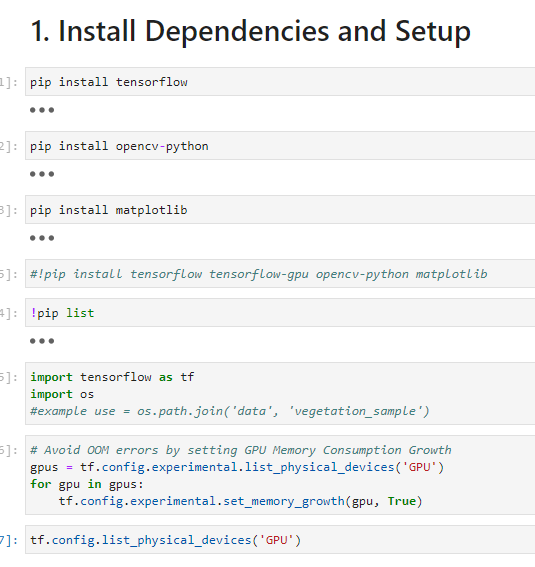
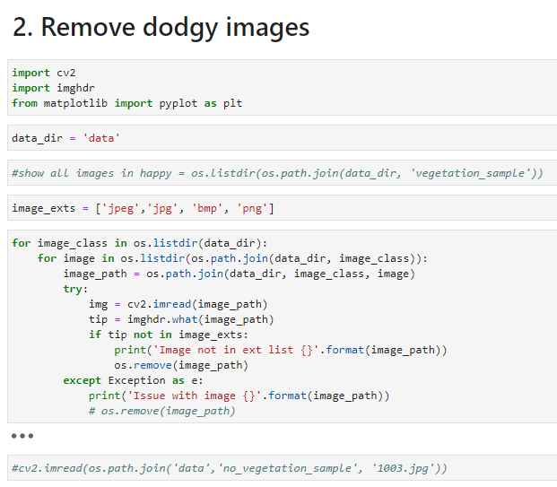
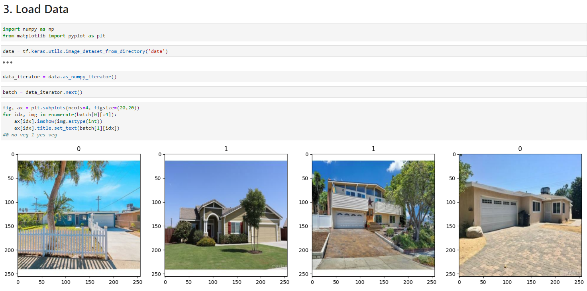
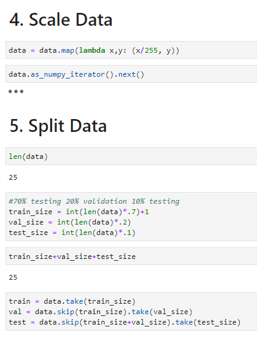
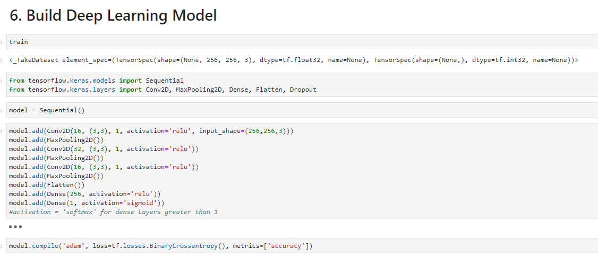
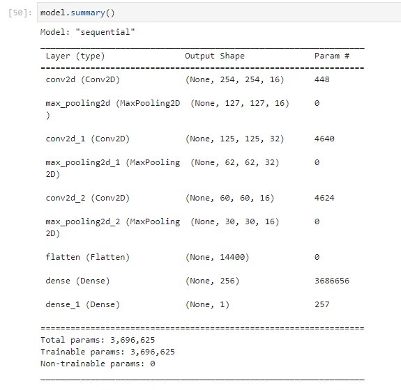
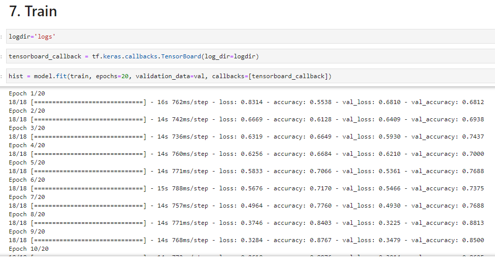
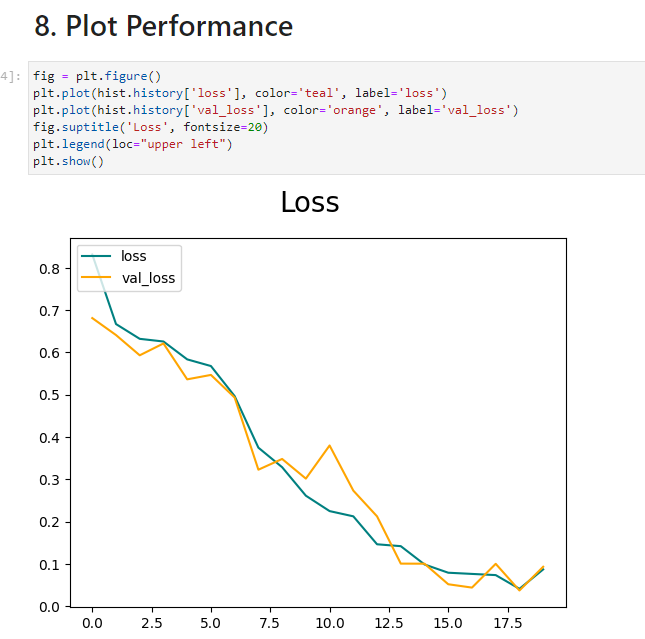
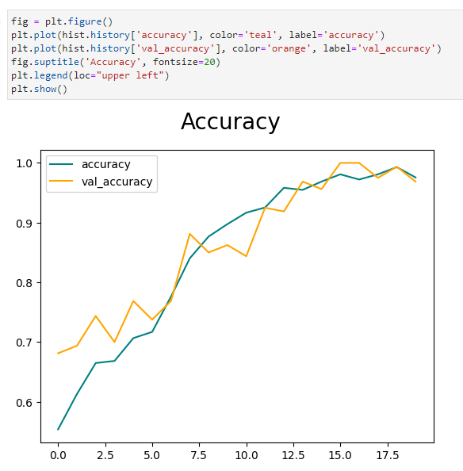
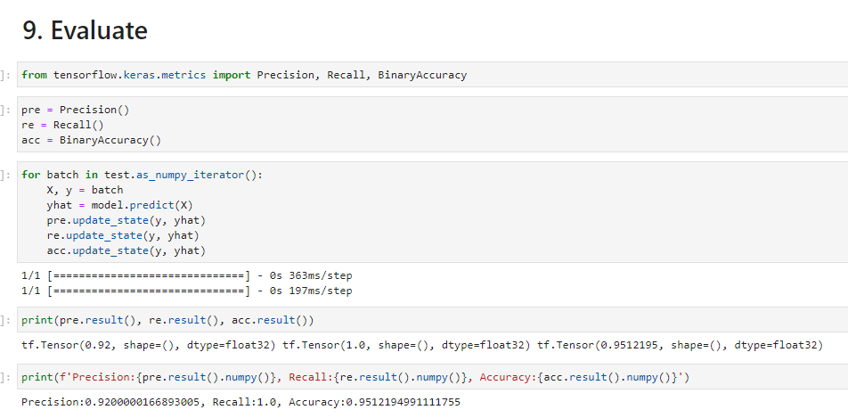
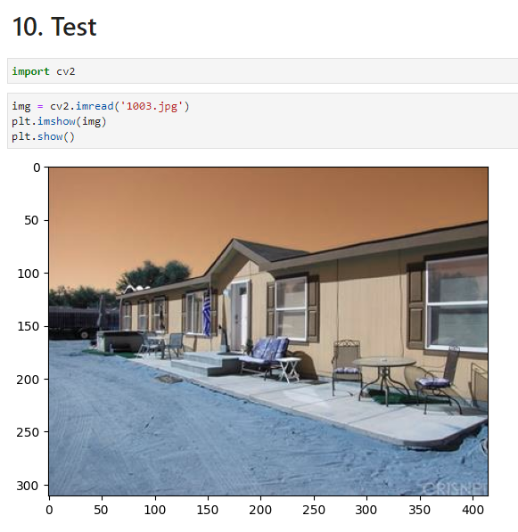
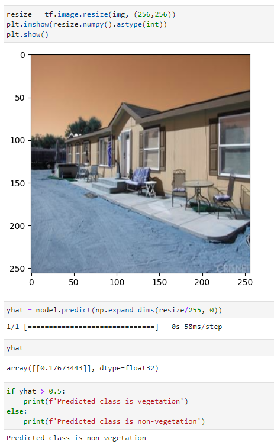
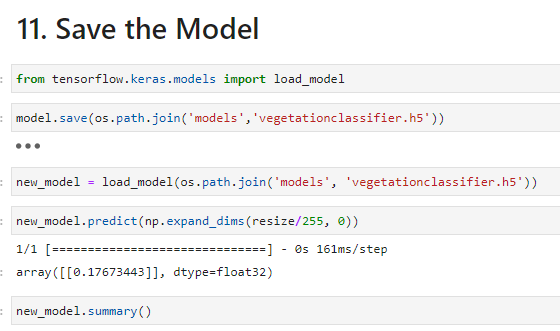
Next a rough draft of our project plan was created using visio. This was created to make a neat and more visual representation of the AI housing project path.
Finally, we looked further into what can be scraped off of Vanguard, Beacon, Trulia, and from the Google Maps API.Using https://iowaassessors.com/ I looked at Story counter for the city of Slater. Roads appear to be counted as parcels which is challenging while trying to collect addresses data.